Más Allá del Infinito
En este capítulo, vamos a explorar las fascinantes ideas del infinito en matemáticas, desde la cardinalidad de conjuntos hasta el famoso Hotel de Hilbert. Este taller combina historias, visualizaciones y ejercicios interactivos para aprender de manera entretenida y accesible.
🎯 Objetivos del Taller
- Entender el concepto de infinito y sus aplicaciones en matemáticas.
- Diferenciar los tamaños de infinito mediante la cardinalidad de conjuntos.
- Resolver problemas interactivos como el Hotel Infinito de Hilbert.
- Visualizar ideas abstractas a través de gráficos y simulaciones.
🔑 Nota: Puedes acceder a la clase en modo presentación a través del siguiente enlace Presentación: Infinity 2024.
Introducción al Infinito
El infinito es una idea abstracta que desafía nuestra intuición. Aunque no es un número, representa algo que no tiene fin, como las secuencias de números o las líneas infinitas.
Conjuntos de Números
Analicemos el conjunto de números más conocidos:
- Naturales:\(\mathbb{N} = {0, 1, 2, 3, \dots}\)
- Enteros:\(\mathbb{Z} = { \dots, -2, -1, 0, 1, 2, \dots }\)
- Racionales:\(\mathbb{Q} = { \frac{1}{2}, 0.10, \dots }\)
- Reales:\(\mathbb{R} = { \pi, \sqrt{2}, e, \dots}\)
En cantidad de elementos: ¿|\(\mathbb{N}| < |\mathbb{Z}| < |\mathbb{Q}|< |\mathbb{R}|<|\mathbb{C}|\)?
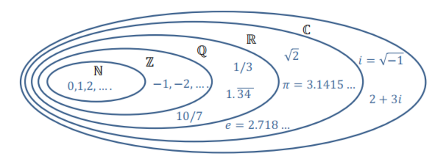
Historia de los Números Infinitos
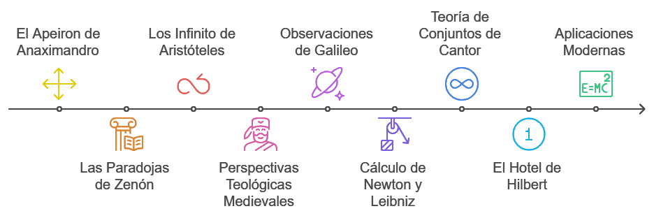
- El Apeiron de Anaximandro: Primer concepto filosófico del infinito como lo ilimitado, origen y fin de todo.
- Las Paradojas de Zenón: Cuestionan la continuidad y el movimiento mediante ideas como “Aquiles y la tortuga”.
- Los Infinitos de Aristóteles: Distinción entre infinito potencial (proceso) e infinito actual (cantidad).
- Perspectivas Teológicas Medievales: Exploran el infinito en relación con Dios como ser eterno e ilimitado.
- Observaciones de Galileo: Paradojas que revelan propiedades inesperadas del infinito, como los cuadrados de números naturales.
- Cálculo de Newton y Leibniz: Uso de límites e infinitesimales para describir procesos infinitos en matemáticas.
- Teoría de Conjuntos de Cantor: Diferentes tamaños de infinito (contable y no contable) que revolucionaron las matemáticas.
- El Hotel de Hilbert: Paradoja que muestra las propiedades contraintuitivas del infinito mediante un hotel con infinitas habitaciones.
- Aplicaciones Modernas: Uso práctico del infinito en física, matemáticas y tecnología, como en la relatividad y el análisis.
¿Qué es contar?
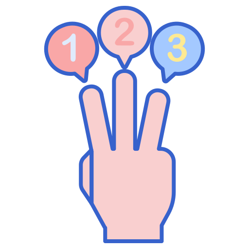
Contar es determinar cuántos elementos hay en un grupo o conjunto. Es una forma básica de organizar y entender cantidades.
Por ejemplo:
- Si tienes 4 manzanas en una mesa, cuentas “1, 2, 3, 4” para saber el total.
- En una fila de 5 personas, puedes contar “1, 2, 3, 4, 5” para conocer cuántas hay.
- Si tienes una colección de 6 monedas, dices “1, 2, 3, 4, 5, 6” para sumar todas.
Fundamento en los Axiomas de Peano
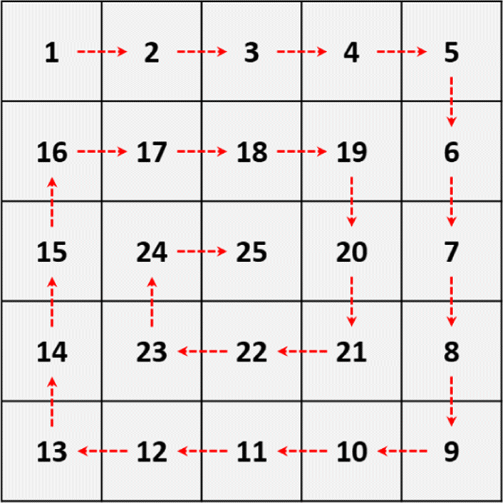
Los Axiomas de Peano son reglas simples que explican cómo funcionan los números naturales (0, 1, 2, 3, …). Son como las bases para contar y hacer matemáticas. En palabras sencillas:
- Primer número: Todo empieza con un número inicial, que puede ser 0 o 1.
- Sucesor: Cada número tiene un siguiente (por ejemplo, después de 1 viene 2, después de 2 viene 3, y así sucesivamente).
- Unicidad: Cada número es único y no se repite.
- Inducción: Si empiezas con el primer número y sigues avanzando, puedes llegar a todos los números naturales.
Cardinalidad de un Conjunto
Se agrega un elemento al conjunto, asignado correctamente a un nuevo número.
Imagen 1
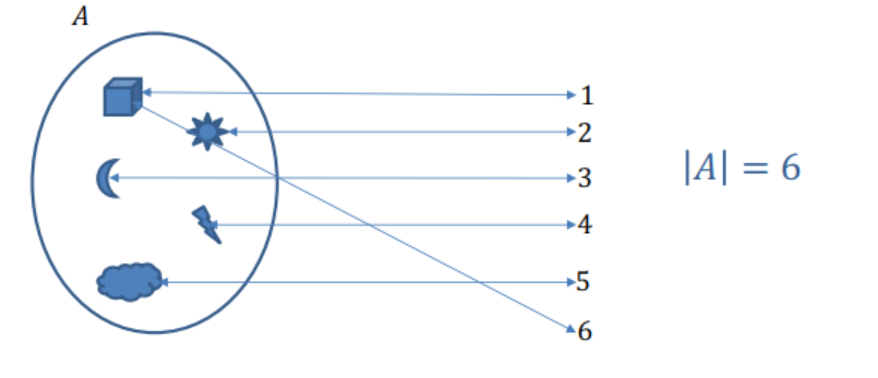Dos elementos comparten el mismo número, rompiendo la correspondencia uno a uno.
Imagen 2
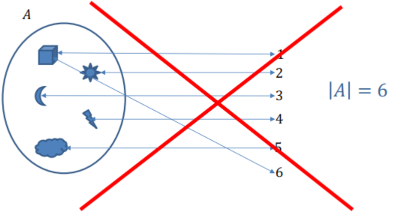El conjunto tiene solo 4 elementos asignados a números únicos.
Imagen 3
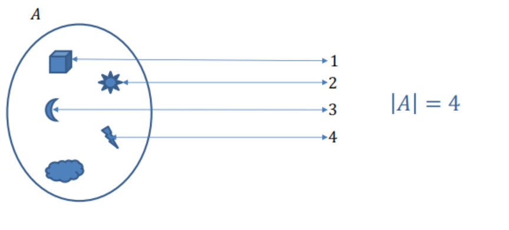Un elemento no tiene número asignado, violando la correspondencia uno a uno.
Imagen 4
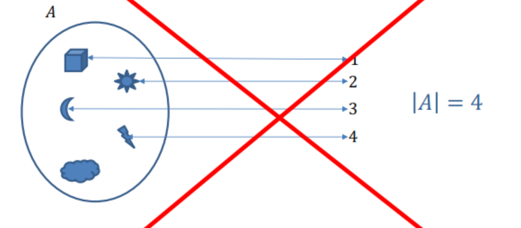El conjunto\(A\)tiene 5 elementos, cada uno asignado a un número único.
Imagen 5
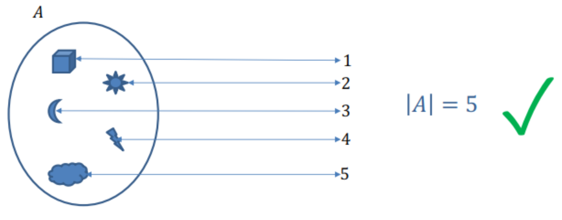Números Naturales

Números Naturales \(\mathbb{N}\):
Incluye \(\{0, 1, 2, 3, \dots\}\), un conjunto infinito porque siempre se puede sumar 1 para obtener un número nuevo.
- Subconjuntos Infinitos:
- Pares (\(\{2, 4, 6, \dots\}\)): Números divisibles por 2, infinitos porque siempre puedes sumar 2.
- Impares (\(\{1, 3, 5, \dots\}\)): Números no divisibles por 2, también infinitos.
- Primos (\(\{2, 3, 5, 7, \dots\}\)): Números mayores que 1 con solo dos divisores, demostrados como infinitos por Euclides.
Estos subconjuntos muestran que dentro de un infinito hay infinitos más pequeños.
Números Enteros
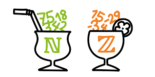
Números Enteros (\(\mathbb{Z}\)):
Incluye \(\mathbb{Z} = \{\dots, -2, -1, 0, 1, 2, \dots\}\), un conjunto infinito porque siempre se puede sumar o restar 1 para obtener un número nuevo.
- Subconjuntos Infinitos de \(\mathbb{Z}\):
- Positivos (\(\mathbb{Z}^+ = \{1, 2, 3, \dots\}\)): Números mayores que 0, infinitos.
- Negativos (\(\mathbb{Z}^- = \{-1, -2, -3, \dots\}\)): Números menores que 0, también infinitos.
- Múltiplos de un número (\(k\mathbb{Z} = \{\dots, -2k, -k, 0, k, 2k, \dots\}\)): Por ejemplo, múltiplos de 2 (\(\{\dots, -4, -2, 0, 2, 4, \dots\}\)), todos infinitos.
- Positivos (\(\mathbb{Z}^+ = \{1, 2, 3, \dots\}\)): Números mayores que 0, infinitos.
Dentro de \(\mathbb{Z}\), podemos encontrar infinitos más pequeños, pero el conjunto completo sigue siendo infinito en ambas direcciones.
Contemos los números enteros
Imagen 1
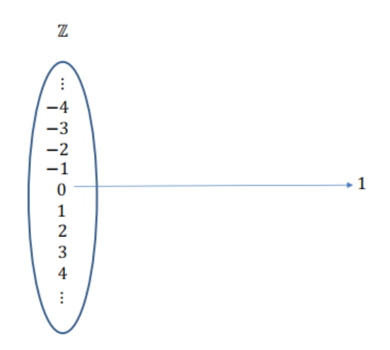Imagen 2
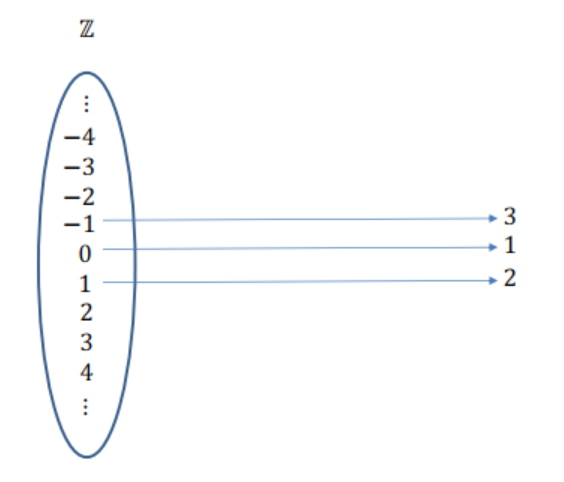Imagen 3
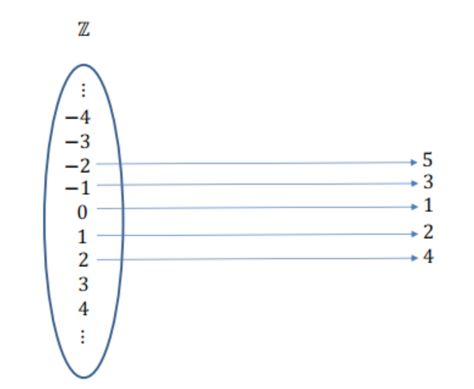Imagen 4
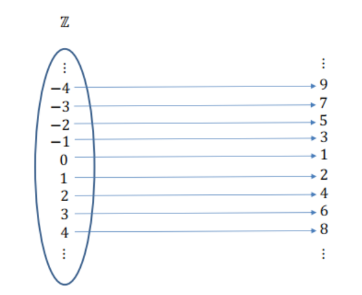Esto significa que \(\color{black}{\boxed{ |\mathbb{N}| = |\mathbb{Z}| }}\), es decir, que los números naturales (\(\mathbb{N}\)) y los números enteros (\(\mathbb{Z}\)) tienen la misma cardinalidad. Por lo tanto, ambos son infinitos contables.
Números Racionales
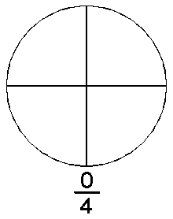
Números Racionales (\(\mathbb{Q}\)):
Incluye \(\mathbb{Q} = \left\{ \frac{p}{q} \mid p, q \in \mathbb{Z}, q \neq 0 \right\}\), el conjunto de fracciones donde \(p\) es un numerador y \(q\) es un denominador distinto de cero. Este conjunto es infinito porque siempre se pueden generar nuevas fracciones al variar \(p\) y \(q\).
- Subconjuntos Infinitos de \(\mathbb{Q}\):
- Fracciones Positivas (\(\mathbb{Q}^+\)): Fracciones mayores que 0, por ejemplo,
\[ \mathbb{Q}^+ = \left\{ \frac{1}{2}, \frac{2}{3}, \frac{3}{4}, \dots \right\}. \] - Fracciones Negativas (\(\mathbb{Q}^-\)): Fracciones menores que 0, como
\[ \mathbb{Q}^- = \left\{ -\frac{1}{2}, -\frac{2}{3}, -\frac{3}{4}, \dots \right\}. \] - Fracciones Reducidas: Subconjunto infinito donde el numerador y el denominador son primos relativos (no comparten divisores). Por ejemplo:
\[ \left\{ \frac{1}{2}, \frac{2}{3}, \frac{3}{5}, \dots \right\}. \] - Múltiplos de una fracción (\(k\mathbb{Q}\)): Fracciones multiplicadas por un número fijo \(k\). Por ejemplo, para \(k = 2\):
\[ 2\mathbb{Q} = \left\{ \dots, -2, -1, 0, 1, 2, \dots \right\}. \]
- Fracciones Positivas (\(\mathbb{Q}^+\)): Fracciones mayores que 0, por ejemplo,
Contemos los números racionales
Imagen 1
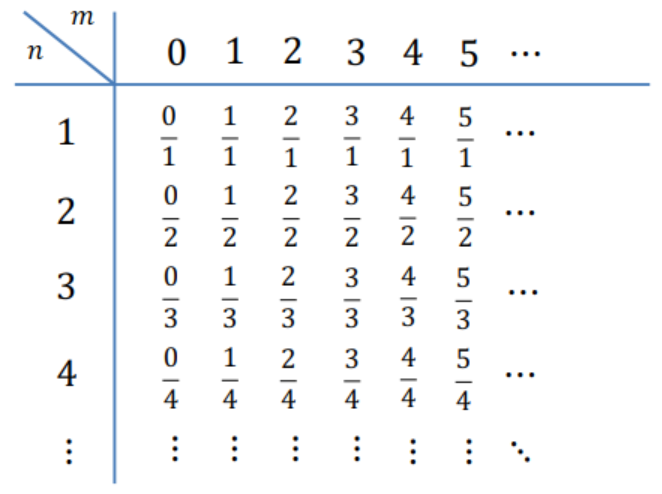Imagen 2
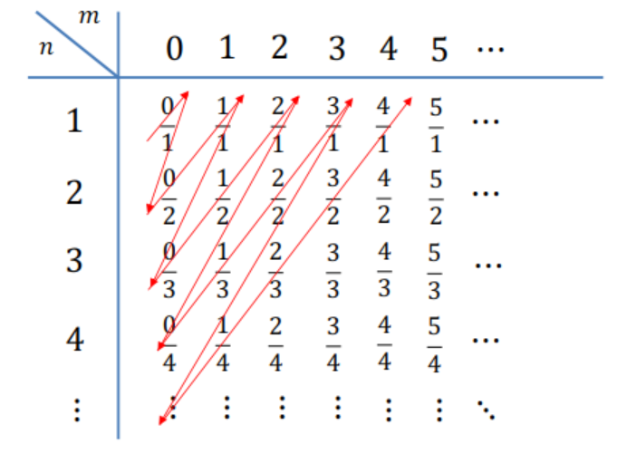Imagen 3
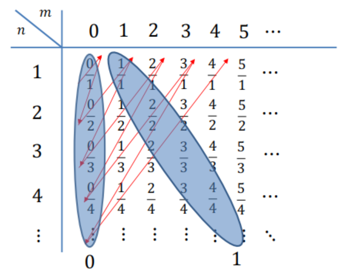Esto significa que \(\color{black}{\boxed{ |\mathbb{N}| = |\mathbb{Z}| = |\mathbb{Q}| }}\), es decir, los números naturales (\(\mathbb{N}\)), enteros (\(\mathbb{Z}\)) y racionales (\(\mathbb{Q}\)) tienen la misma cardinalidad. Aunque \(\mathbb{Q}\) incluye fracciones además de enteros, es posible enumerarlos, por lo que todos son infinitos contables, representados por \(\aleph_0\).
Números Reales
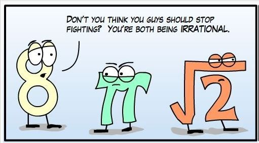
Números Reales (\(\mathbb{R}\)):
Incluye tanto números racionales (\(\mathbb{Q}\)) como irracionales (\(\pi, \sqrt{2}, e, \dots\)). Es un conjunto infinito, pero su cardinalidad es mayor que la de los números naturales (\(\mathbb{N}\)).
- Características:
- Contiene números racionales (fracciones) e irracionales (no expresables como fracciones).
- Es un conjunto continuo, con infinitos números entre cualquier par de números reales.
Contemos los números irracionales
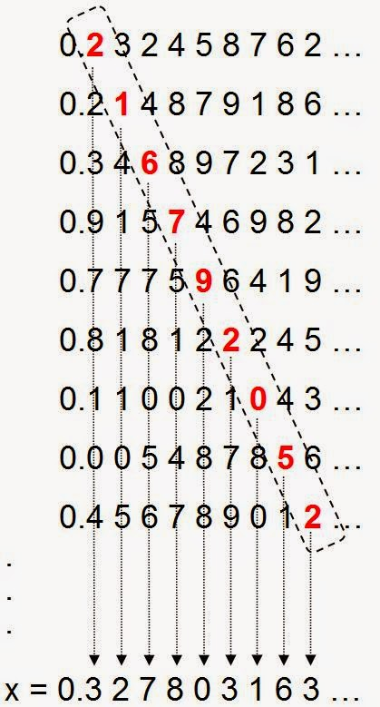
En 1891, Georg Cantor demostró que no es posible enumerar todos los números reales en el intervalo \((0, 1)\) usando su argumento de la diagonalización. Esto significa que los números reales son un conjunto infinito no contable, un tipo de infinito más “grande” que el de los números naturales (\(\mathbb{N}\)).
\[\color{black}{\boxed{\aleph_1 = |\mathbb{R}| > |\mathbb{N}| = |\mathbb{Z}| = |\mathbb{Q}| = \aleph_0}}\]
Hotel de Hilbert
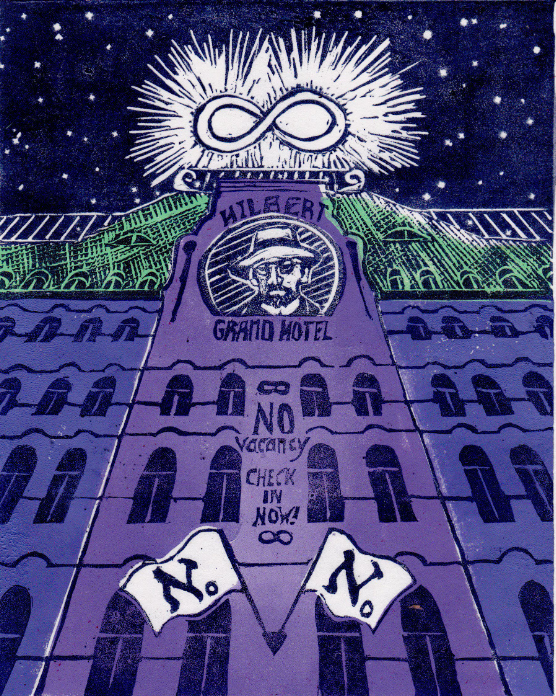
El Hotel de Hilbert es una paradoja que muestra las propiedades del infinito: un hotel con infinitas habitaciones numeradas \(1, 2, 3, \dots\), todas ocupadas, aún puede alojar más huéspedes. Al mover a cada huésped a la habitación siguiente, se libera espacio para nuevos huéspedes, incluso si llegan infinitos grupos. Ilustra que el infinito no se comporta como los números finitos.
🐶 Bienvenidos al Hotel de Vale
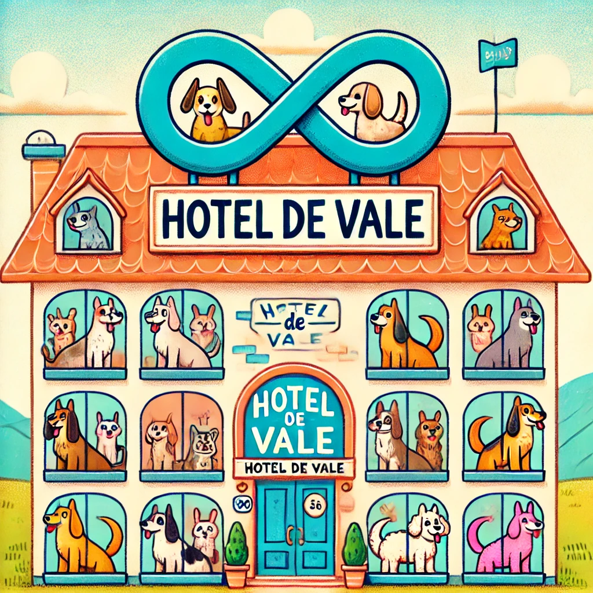
El Hotel de Vale es un lugar especial con infinitas habitaciones numeradas diseñadas para perritos. Aunque todas las habitaciones estén ocupadas, siempre hay espacio para más, gracias a las propiedades únicas del infinito.
✨ ¡Siempre hay espacio para uno más!
Caso 1: Llega un Nuevo Perrito
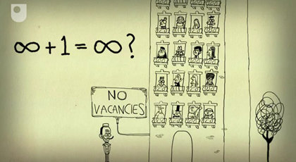
- Situación: Todas las habitaciones están ocupadas por un perrito, cada uno en una habitación numerada\(1, 2, 3, \dots\).
- Problema: Llega un nuevo perrito, pero el hotel parece lleno.
Movemos a cada perrito de la habitación \(n\) a la habitación \(n+1\), liberando la habitación 1 para el nuevo huésped.
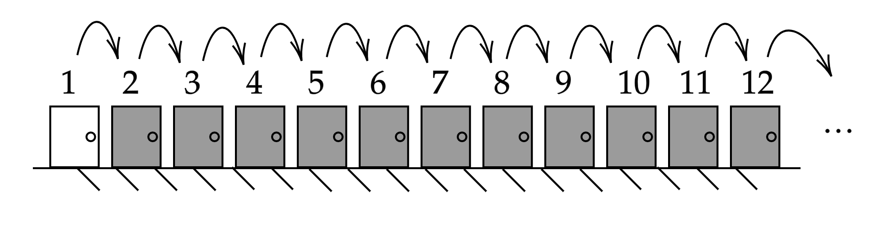
Resultado: El nuevo perrito tiene su espacio sin necesidad de expulsar a nadie. Esto ilustra cómo los conjuntos infinitos permiten reorganizarse para hacer espacio.
Caso 2: Llega un Bus con Infinitos Perritos
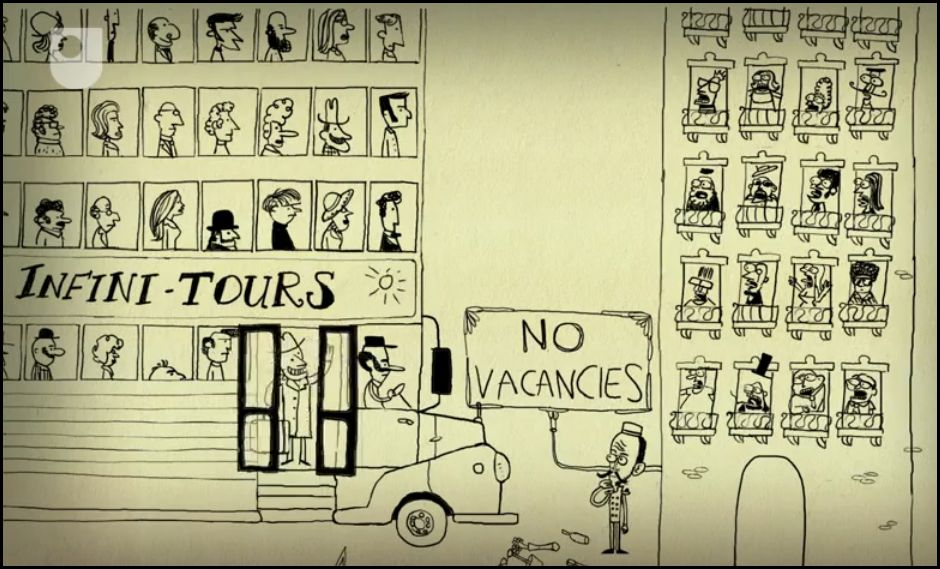
- Situación: Todas las habitaciones están ocupadas, y ahora llega un bus con infinitos perritos numerados\(1, 2, 3, \dots\).
- Problema: Parece imposible acomodar a un grupo infinito de nuevos huéspedes en un hotel que ya está lleno.
Movemos a cada perrito que ya está en la habitación\(n\) a la habitación\(2n\), liberando todas las habitaciones impares para los nuevos huéspedes.
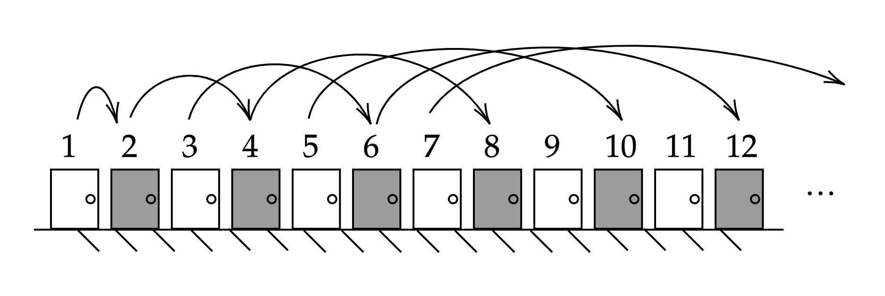
Resultado: Cada perrito del bus ocupa una habitación impar sin desalojar a los que ya estaban alojados.
Caso 3: Llegan Infinitos Buses con Infinitos Perritos
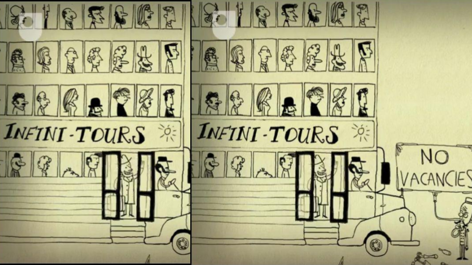
- Situación: Ahora llegan infinitos buses, cada uno con infinitos perritos numerados\(1, 2, 3, \dots\). Cada bus también está numerado\(1, 2, 3, \dots\).
- Problema: Acomodar un número infinito de grupos infinitos en un hotel aparentemente lleno.
Para acomodar infinitos buses con infinitos perritos en el Hotel de Vale, usamos los números primos como base para asignar habitaciones de manera única y ordenada.
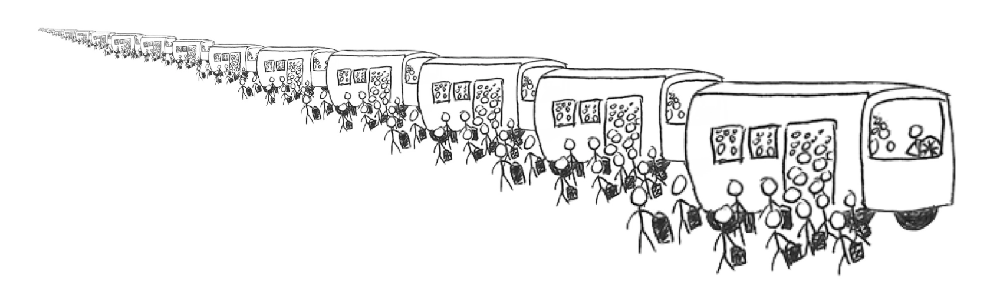
Cómo funciona la estrategia
- Habitaciones del hotel: Cada habitación del hotel es identificada por un número entero único.
- Asociación con números primos:
- Las habitaciones del hotel inicial se asignan usando potencias de \(2\):
\[ \text{Habitación para el huésped del hotel: } 2^i, \quad i = 1, 2, 3, \dots \] - El primer bus usa potencias del primo siguiente, \(3\):
\[ \text{Habitación para el bus 1, asiento } j: 3^j, \quad j = 1, 2, 3, \dots \] - El segundo bus usa potencias de \(5\):
\[ \text{Habitación para el bus 2, asiento } j: 5^j, \quad j = 1, 2, 3, \dots \] - El tercer bus usa potencias de \(7\):
\[ \text{Habitación para el bus 3, asiento } j: 7^j, \quad j = 1, 2, 3, \dots \]
- Las habitaciones del hotel inicial se asignan usando potencias de \(2\):
- Asignación general:
- Para el bus \(k\), los números del primo correspondiente \(p_k\) se usan como base: \[ \text{Habitación asignada: } p_k^j, \quad \text{donde } p_k \text{ es el } k\text{-ésimo primo, y } j \text{ el asiento.} \]
Imagen 1
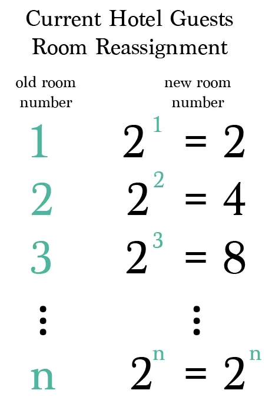Imagen 2
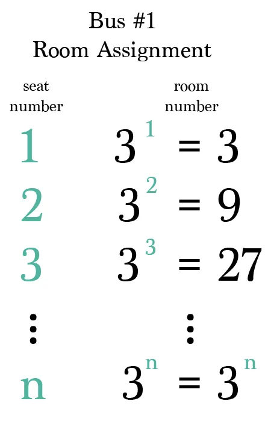Imagen 3
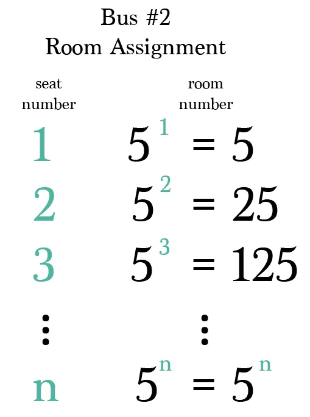Resultado: Incluso con infinitos buses y perritos, el hotel puede acomodar a todos gracias a la capacidad de reorganizar conjuntos infinitos.
Conclusiones
🌌 El Infinito:
El concepto de infinito desafía nuestra intuición y rompe con las reglas que aplicamos a los números finitos. Su estudio abre la puerta a una comprensión más profunda de las matemáticas y el universo.📏 Cardinalidad:
No todos los infinitos son iguales. A través de la cardinalidad, aprendemos que hay diferentes “tamaños” de infinito, como el infinito contable (\(|\mathbb{N}| = |\mathbb{Z}| = |\mathbb{Q}|\)) y el infinito no contable (\(|\mathbb{R}|\)).🐶 Hotel de Perritos:
Un ejemplo lúdico que muestra cómo reorganizar conjuntos infinitos para hacer espacio. Nos enseña que el infinito tiene propiedades sorprendentes y no intuitivas.🎓 Aplicaciones del infinito:
Desde la teoría de conjuntos y las bases del cálculo, hasta la física y la computación, el infinito juega un papel crucial en el desarrollo del conocimiento.🌟 Reflexión final:
Explorar el infinito nos enseña que las matemáticas no son solo números y operaciones; también son una herramienta para entender conceptos abstractos y expandir los límites del pensamiento humano.
🔑 Nota: Para aquellos interesados en continuar su aprendizaje, pueden visitar este sitio de recursos para acceder a material educativo adicional.